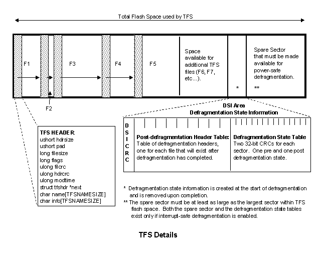
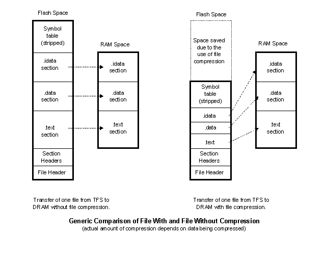
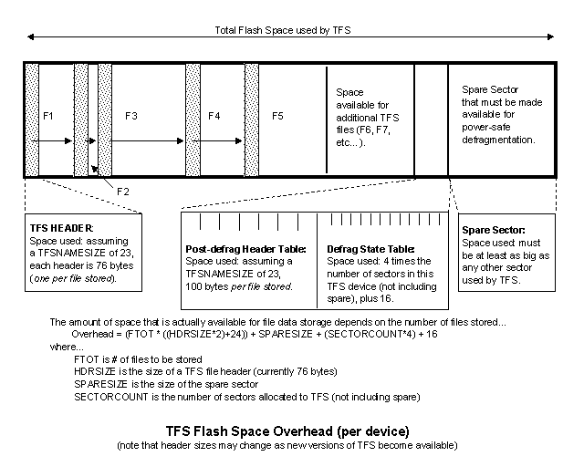

The following discussion focuses on TFS, a small embedded file system designed for efficient use of standard target resident, large sector flash memory subsystems.
Yet another Flash File
System... Why?
Implementation
Details
File Attributes
Autobootable Files
File User Levels
What is an in-place-modifiable
file?
File Decompression
Time-of-Day
Change-Log Facility
Multiple Storage
Devices
Space Overhead
Required by TFS
Flash Life-Expectancy
TFS API Return
Values
There are flash file systems (FFS) available as extensions to most of the RTOSes out there. Each has its own set of capabilities and each one has to be hooked into the RTOS in some non-trivial way. Plus, an FFS typically costs an additional fee to use. Then, if you use a different OS, or possibly none at all, you have to determine whether or not the FFS you are using is compatible with the new environment; and, even if it is, you have to re-do the "hook-up" of the FFS to the RTOS.
The model for TFS (and the servers that use TFS) is to keep things simple, but still provide the embedded system with a wide range of facilties. TFS is a linear file system that gives a typical embedded system project all of the "file-system-like" capabilities it will ever need (most of which would not come with an off-the-shelf FFS)... A complete programming API that looks very similar to the standard open/close/read/write/etc... system calls that you would use on a Unix platform. Also a command line interface that allows a user to list, display, add, delete, load and edit files. Its loader supports executables as COFF, ELF, AOUT or ascii scripts. File decompression, user levels, a file change-log and automatic file system cleanup (defragmentation) are also supported with TFS. Its implementation is independent of the OS used (doesn't even need one) and it is easily hooked into the application.
Also, typical application-level servers that interface to a file system are already written and available. HTTP, FTP and TFTP servers can easily be incorporated into any RTOS/TCP-IP package that conforms to the standard sockets API. Note that these servers are not full-blown servers (no, the HTTP server is not Apache compatible!); but they do support the majority of the typical needs of an embedded system.
There are two defined sections of the system flash memory: flash space used by the monitor code itself and the flash space used by the file system. TFS presents itself as an API to the application code, allowing it to create, modify and read files. To the user interface, it is seen as a set of commands that manage those files (list, remove, display etc..). The flash that is used by TFS begins on a sector boundary and, depending on the defragmentation method configured at monitor build time, one of the largest of those sectors may or may not be dedicated to interruptible defragmentation.
TFS organizes the files within the flash in a one-way linked list. The initial portion of the file is a file header, which contains information about the file, pointer to the next file and 32-bit crcs of the header and data portion of the file. Maintaining unique crc checks for header and data allows TFS to more accurately detect corruption. File size is limited only by the amount of flash allocated to TFS, there is no restriction with regard to sector boundaries.
When the system is first built, TFS must be initialized. This means that the flash space allocated to TFS must be erased. From that point on, as a file is created it is appended to the end of the linked list of files. If a file is deleted from the list, it is simply marked as deleted. At some point, after several files have been deleted, it will be necessary to clean up the TFS flash space by running a defragmentation (tfs clean). There are currently two different mechanisms for TFS defragmentation that can be used (established at monitor compile time). The simpler of the two does not require a spare sector to be dedicated to defragmentation, but it assumes that when it is run it can use as much RAM space as there is FLASH space dedicated to TFS. Also, this simpler method is not protected from a reset or power hit during defragmentation. This means that if the defragmentation is interrupted, it is likely that the file system will be corrupted. The second mechanism requires that a sector be allocated to the defragmentation process, but it does not need RAM. It also uses a small block of flash at the end of the TFS flash space for maintaining non-volatile state that can be retrieved in the event of an interrupted defragmentation (power hit or reset).
Note that the spare sector cannot reside within the space used by TFS. It must be at the end because TFS assumes that any one file is stored in one contiguous block of flash. This, by the way, is a very nice feature for extremely real-time dependent systems... A data file can be stored in flash, accessed by name to retrieve the starting point of the data, and from that point on, simple (and efficient) memory accesses can be made to read data from the file.
TFS supports file attributes. The attribute simply describes the file to TFS, so that when TFS does some automatic stuff, it knows how to do it. An attribute in the file header is simply a bit setting. At the command line, each attribute is assigned a letter which is used to display or create (in a non-verbose mode) the files in TFS. Following is a list of all the file attributes, including a brief description of each...
Attribute Abbreviation Description executable script e executable file of CLI commands executable binary E executable/loadable COFF, ELF or AOUT binary image* auto-boot b file is to be automatically run at boot time auto-boot with query B file is to be automatically run at boot time, after querying user compressed c file is compressed in-place-modifiable i file is in-place-modifiable unreadable u file is not readable when monitor is below required user level user-level 0-3 4 different user levels * Currently COFF, ELF and AOUT are the supported loadable file formats. Others will be added as necessary.
At some point in the startup of the monitor, it looks to TFS for auto-bootable files. There are actually three different types of autobootable files: two types established by the attributes assigned to the file and one special case (the monrc file). For the monrc file to automatically run, it must exist and be marked as executable. It will be run prior to any other autobootable file in TFS. Actually, it is run prior to the monitor having completed its own initialization (this is done so that the execution of monrc can be used to configure the monitor as it starts up). The remaining autobootable files are run after the monitor has completed initialization. They will be run in alphabetical order, so the order in which they are placed in TFS doesn't matter. The order in which they are listed via "tfs ls" is the order in which they will be executed...For the above list (output of "tfs ls"), the order of autoboot execution would be: 1. monrc; 2. boot_diag; 3. ias_app. All other files listed are simply data files used by the application.Name Size Location Flags Info
bkgd.jpg 5976 0x80047a6c
cardtilt.gif 6099 0x80040c1c
boot_diag 109358 0x8004921c BeE
construction.gif 20222 0x8004243c
form.html 466 0x8004004c
ias_app 792080 0x80155a7c BeE
index.html 442 0x8004026c webpage
info1.html 1053 0x8004047c webpage
info2.html 734 0x800408ec webpage
lucentlogo.gif 1680 0x8004738c
monrc 823 0x80154d2c eThe two autobootable attributes supported are "B" and "b", both of which will run at startup; but the "B" type will query the user at the console port, providing an opportunity to abort the autoboot of that file. Both scripts and binary executables can be configured with autoboot flags enabled; but there are limitations. Consider the list of autobootable files to be a script that contains those executables, each of which will be run in the order shown by "tfs ls", then refer to the section on script nesting for further discussion.
Typically, when a file is modified, the original file is marked as deleted, and the new version of the file is appended to the end of the list of files currently stored in TFS. This can involve a relatively large amount of overhead if the modification to be made is trivial. As an alternative, a file can be created as an "in-place-modifiable" file which means that the API provides a means by which a file can be modified without the typical deletion/re-creation step mentioned above. This is done by creating the file as in-place-modifiable and specifying the file to be of some size. The space is then allocated in TFS for this file, but the flash is all left in a writable state. This usually means that the bytes in the flash are all 0xff (usually, bits in flash can be cleared on a byte-by-byte basis, but to reset them, an entire sector must be erased). All subsequent writes to this file, then, are done directly to the currently allocated flash instead of to a new block of flash. Obviously this puts some responsibility back on the programmer, but it can potentially save quite a bit of overhead if necessary. When a file is created as in-place-modifiable, then the TFS API function tfsipmod() should be used instead of the standard open-modify-close model.
The monitor supports the concept of user levels. At any given time, there is an active user level. TFS supports the ability to store a file at a particular user level, then limit access of that file based on the user level at the time of the access. The access can be limited to read-only or not-even-readable. Refer to the discussion on user levels for complete details, but in short, this means that certain files (and executables) can be configured to be accessible only at certain user levels. Since each user level is attainable only via password, a system can be built at user level 3, then lowered to user level 2,1, or 0 and provide a certain degree of protection from unauthorized access.
A typical application file will be either COFF, ELF or AOUT. Each of these file formats has multiple sections of text and data that must be transferred out of the flash space the file resides in, and into some RAM/DRAM space that the application was built to run in. Decompression of these file types is done by decompressing each of the sections within the file from flash, directly into the RAM/DRAM space the section is destined for. This "section-at-a-time" decompression eliminates the need to decompress the entire file into some block of memory, then load from that block into the actual memory space the image was built for.
This mechanism requires some post processing of the final application file built on a host using the elf, coff and aout support tools. Two different decompression methods are supported: huffman and zlib, each method has its own set of advantages/disadvantages. Using the huffman decompressor requires just a small extension to the monitor footprint (3-5 K) and no additional memory for malloc, but typical compression is only about 15-20%. Using the public domain zlib utilities requires a larger extension to the monitor footprint (35-40K) and additional heap space (see appnote on heap space expansion for file decompression) for the monitor's malloc, but compression with zlib can result in a 70% reduction in space needed for file storage.
Since the basic model of the monitor is to run without the need of any interrupts from the host processor, how is it that TFS can keep track of time of day? Actually, it doesn't. It depends on the application code to provide it with two functions that will support this: getLtime() and getAtime() . The first one, (long)getLtime(void), must return a long that is stored in the header of the TFS file when it is created. The second one, (char *)getAtime((long *)tval, (char *)buf, (int)buflen) can be used to simply return an ascii string representing the current time (if tval is 0) or it can return an ascii string representing the value stored in tval. The value in tval will typically be the value that was previously returned from getLtime(). With this interface, TFS really doesn't have a clue about time-of-day, but it uses the capabilities given to it by the application to make it look like it does.
Note that this is a feature that is used by TFS to populate an entry in the header of the file being written at the time. If the two above functions are not supplied to TFS, then the header entry is left blank, and the file simply has no recollection of its time of creation.
TFS supports the ability to keep track of all modifications made in the file system. This is done by logging an action (add, delete or in-place-modify) and a filename to a file in TFS. By default this is not enabled, but can be enabled/disabled at any time using the tfs log command. The command will only run at the MAX user level and the file is created at the maximum user level. If the tfsctrl(TFS_TIMEFUNCS) command has been called to establish time-of-day functions in TFS, then the log will also reflect the time at which the change was made. Following is an example of the content of the TFS change-log (.tfschlog) file...
ON: startup
ADD: cardtilt.gif
ADD: construction.gif
ADD: lucentlogo.gif
ADD: form.html
ADD: index.html
ADD: info1.html
ADD: info2.html
ADD: bkgd.jpg
ADD: cgiapp
ADD: cleanup
ADD: .httpadmin
ADD: .dhcpsadmin
DEL: cardtilt.gif
ADD: cardtilt.gif
DEL: construction.gif
ADD: construction.gif
DEL: lucentlogo.gif
ADD: lucentlogo.gif
Overlaying TFS onto a FLASH device is not free. There is a certain amount of space that is required by TFS; some of that space is fixed; other space is based on the number of files stored. The following diagram illustrates this...
Note1: a file that is marked as deleted in TFS requires less overhead than a file that is "living". This is because when a file is dead, there is no need to allocate a defragmentation header to that file. This means that removal of a file (even though it is not actually erasing the flash) still frees up some memory space for new file storage.
Note2: the spare sector must be larger than all other sectors allocated to a particular flash device within TFS; also, the sector that is just before the spare sector must be large enough to contain all of the defrag header tables. Files can never be stored in the spare sector. Files can be stored in the sector that will contain the defrag overhead, but TFS will not allow the file storage in that sector to exceed the space that is needed for defragmentation overhead; hence, that sector should be as large as possible (but not larger than the spare).
Note3: when a file is copied into TFS flash space, TFS first looks to see if this file with the same name already exists. If it does, and the data in the new file is identical to that of the current file, then there is no action taken. If on the other hand, the new file is different, then the old file is marked "stale" while the new one is being transferred into flash. This "install-the-new then remove-the-old" mechanism is a protection against the case of the new file transfer process being interrupted. If during the transfer of the new file something causes the target to restart, then TFS can recover by clearing out the partially transferred "new" file and re-installing the stale one. The user must be aware of this because it requires additional flash overhead... There must be space for the old and the new in one device. Note that the user can remove the old one, defragment and then install the new one to avoid this overhead, but then the protection described above is lost.
In some hardware designs there may be more than one device that could be used for file storage. TFS supports this. A default system will have a boot monitor in the base of the flash, then all remaining flash in that device is used by TFS and that's it. A more complicated system may contain battery backed ram, a boot flash device and a secondary storage flash device, etc... TFS supports multiple devices that are not necessarily in contiguous address space. Each device appears to the user as a directory, so any file can be stored in any device (limited by the size of the device, of course), but a file cannot span across multiple non-contiguous devices. For each device, the same power-safe defragmentation method is used; hence, if battery-backed RAM was on-board, it could be used to eliminate the problem of flash-life expectancy (see below) if there is a need to modify files at a high frequency.
To "steer" a file to a particular device, each device has a unique prefix that, when made part of the file name, tells TFS that the file is destined for that device. If the prefix is omitted from the filename, then the default device is used for storage. Similarly, the file-system maintenance commands (tfs check, tfs clean, tfs freemem, etc...) can also be pointed to a particular device by specifying the device prefix.
It is important to be aware of the fact that the underlying technology (flash) has a limited number of erase cycles. Current flash devices typically support 100,000 to 1,000,000 erases per sector. Applications will use TFS in different ways, so it is impossible to draw any conclusions here with regard to how long the flash will last in a system using TFS. This section will; however, discuss the way TFS uses the flash so that the user can determine flash life based on their application's intended use of the file system.
First of all, be aware that TFS makes no attempt to do "wear-leveling". If the file system you need is to be used heavily enough to require wear-leveling, then buy one! Wear leveling adds a great deal of complexity to the underlying implementation and is beyond the scope of TFS. In every embedded system project I've been on, the need for clean interface to flash by name (instead of by address) has been there. On the other hand, the frequency of file modification has never deemed it necessary to even consider wear-leveling; expecially with the trend by most flash manufacturers to support 1,000,000 erases per sector.
As mentioned above, the TFS API presents itself to the programmer in much the same way a standard OS's file system would be seen. This may mislead application developers into thinking that the file system can be thought of as a disk that provides the user with the freedom to write/erase at any frequency. This is not the case! TFS's defragmentation mechanism does not use a floating SPARE sector . This means that the spare sector is the portion of flash that is likely to wear out first simply because it is used as a temporary storage for all other sectors when defragmentation is done. In a current Packet Phone Adapter design, there are 13 sectors of flash used for TFS file storage and 1 for the spare sector. Assuming worst case defragmentation (all 13 sectors are affected), then a defragmentation run once a day on a part having a life expectancy of 100,000 erase cycles will be good for over 20 years (100,000/13/365=21) . This value of 20 years makes the assumption that a defragmentation will be done daily, and that all sectors are affected by the defragmentation. The frequency of defragmentation and the number of sectors affected are very dependent on the application's use of the file system. For projects that TFS was originally designed for, this realistically means that there is no need to be concerned with flash life expectancy. For newer applications, flash usage must be considered.
Let's discuss the way the sectors are utilized and how different applications may wear out flash faster than others may... A flash sector is only erased during defragmentation. When a file is deleted, it is simply marked as deleted (a bit in the header). A file is deleted by the command tfs rm or through the API functions tfsunlink() and tfsclose() when the file was opened to for writing or appending. If a file that exists is opened for writing, the actual modification steps are deletion of the original file and re-write of the new file after the file that is currently the last file in physical flash space. Eventually this process reaches the end of the flash space used by TFS, so defragmentation must be run. At defragmentation, all of the space wasted by the deleted files is cleaned up and the current list of active files is placed end-to-end in the flash. This means that each sector used by TFS must be copied to the SPARE sector, then that sector is erased and only the active files in that sector are copied back to the original sector from the spare sector. This is repeated for each sector in TFS. The defragmentation attempts to make this as sector-erase-efficient as possible. If a sector is not affected by the defragmentation, then it is left untouched; hence, the number of sectors actually affected by a defragmentation depends on the amount of flash space currently being used by TFS and the position of the deleted files within the flash space.
In a typical embedded system project, the files in TFS will be the application itself, a monrc file for system configuration followed by other application specific files. The application executable is likely to be the largest file and also the least likely to change at a high frequency. This means that the space taken up by the application executable is fairly static hence, the number of sectors occupied by the application will not contribute to the wear of the spare sector. This fact in and of itself increases the estimated life expectancy calculated above. On the other hand, if the application executable is quite large relative to the total TFS space available, then, if there are any files that are to be modified on a regular basis, defragmentation will be run more frequently. The point is that the actual wearing rate of the flash is very application specific and must be thought out seriously.
The TFS API functions typically return TFS_OKAY (tfs.h) if successful; else they return some negative value. This section lists the current return values and their verbose description, followed by an example snippet of code that prints out the verbose equivalent of the non-TFS_OKAY return value.If the application code using the tfs api needs to show the user the verbose equivalent of these return values, following is an example...
- TFS_OKAY
no error- TFSERR_NOFILE
file not found- TFSERR_NOSLOT
maximum number of files are currently opened- TFSERR_EOF
end of file reached- TFSERR_BADARG
bad argument passed into api function- TFSERR_NOTEXEC
file is not executable- TFSERR_BADCRC
crc test of file failed- TFSERR_FILEEXISTS
file already exists- TFSERR_FLASHFAILURE
flash operation failed- TFSERR_WRITEMAX
max write count has been exceeded on an in-place-modifiable file- TFSERR_READONLY
file is read-only- TFSERR_BADFD
invalid file descriptor- TFSERR_BADHDR
bad coff | elf | aout header- TFSERR_CORRUPT
file is corrupted- TFSERR_MEMFAIL
some type of memory failure occurred- TFSERR_NOTIPMOD
file is not in-place-modifiable- TFSERR_FLASHFULL
flash space dedicated to TFS is full- TFSERR_USERDENIED
user level access denied- TFSERR_NAMETOOBIG
file name size exceeds limit- TFSERR_FILEINUSE
can't remove file if it is in use- TFSERR_SCRIPTINSUB
can't put a script in a subroutine- TFSERR_NOTAVAILABLE
tfs facility is not available (not included in config.h)- TFSERR_BADFLAG
unknown tfs flag entered- TFSERR_CLEANOFF
defragmentation is disabled- TFSERR_FLAKESOURCE
souce is changing during the tfsadd() call. This usually means that the source address pass to tfsadd() is in TFS space and a defragmentation caused the source data to change.int tfd;
tfd = tfsopen("file",TFS_RDONLY,0);
if (tfd < 0)
printf("%s\n",(char *)tfsctrl(TFS_ERRMSG,tfd,0));